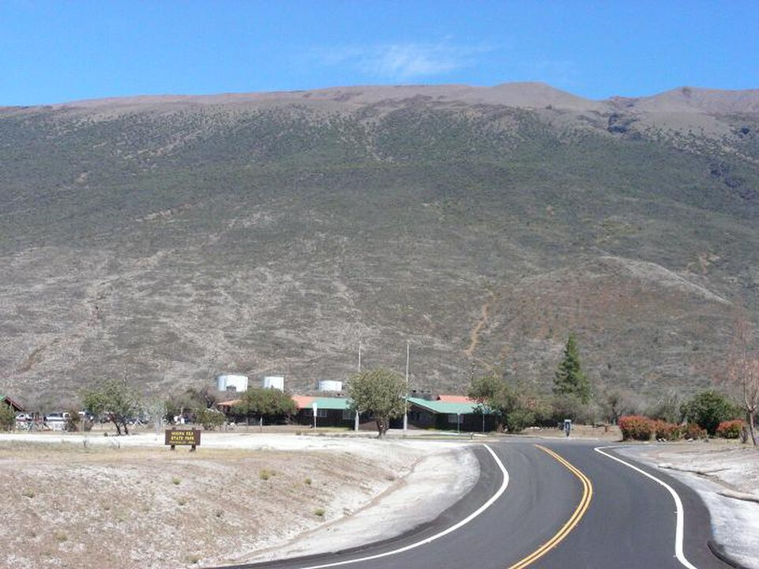

Gilbert Kahele Recreation Area
Place: Gilbert Kahele Recreation Area, Hawaiʻi Island
Type: Public park / recreational facility
Namesake: Gilbert "Gil" Kahele (1942–2016), Hawaiʻi Island state senator and longtime Pōhakuloa Training Area official
Story it tells: How a deteriorating mountain recreation area was revitalized through the efforts of a local state senator and renamed in his honor, preserving a legacy of public service.

The Gilbert Kahele Recreation Area sits along the Daniel K. Inouye Highway (Saddle Road), between Mauna Kea and Mauna Loa on Hawaiʻi Island. Its origins reach back to the 1930s, when the Civilian Conservation Corps (CCC) established a camp at Pōhakuloa, building stone cabins and other facilities. The site later became known as Pōhakuloa Park before being re-developed into the Mauna Kea State Recreation Area during the 1960s. New cabins, picnic areas, and other facilities replaced the original CCC structures, creating a high-elevation recreational site for residents and travelers crossing the island. By the early 2010s, however, deteriorating infrastructure and limited maintenance funding had left much of the park in disrepair, with cabins closed and facilities in need of substantial repairs.
Gilbert "Gil" Kahele was born in 1942 and raised in the fishing community of Miloliʻi in South Kona, where traditional Hawaiian fishing practices and community life shaped his childhood. After serving in the U.S. Marine Corps, Kahele began a civilian career with the Department of Defense, spending more than three decades at the nearby Pōhakuloa Training Area and eventually serving as its Director of Public Works. His work gave him a close connection to the recreation area along Saddle Road as he drove past it frequently and observed the gradual decay. Active in Democratic Party politics, Kahele was appointed to the Hawaiʻi State Senate by Governor Neil Abercrombie in January 2011, filling the vacancy left by Russell Kokubun. He subsequently won election in 2012 and reelection in 2014, representing communities across eastern Hawaiʻi Island until his death in January 2016.
As a state senator, Kahele advocated restoring the deteriorating Mauna Kea State Recreation Area and transferring its management to Hawaiʻi County, which he believed could better maintain and improve the facilities. In 2014, the state approved an agreement allowing the county to assume responsibility for the park, paving the way for extensive renovations to its cabins, restrooms, playground, and other amenities. The improvements revitalized the recreation area as a public destination and important rest stop along Saddle Road. On May 15, 2019, the park was officially renamed the Gilbert Kahele Recreation Area in honor of the late senator, on what would have been his 77th birthday. The renamed park recognizes a public servant whose personal and professional connections to the area helped inspire his efforts to preserve the facility for future generations.